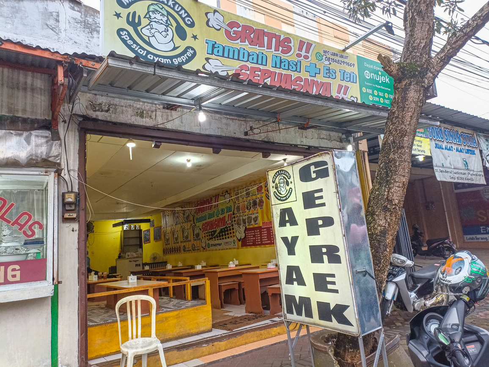
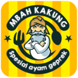

Ingin Tahu?
Tentang MBAH KAKUNG?

TENTANG MBAH KAKUNG
Warung Makan Mbah Kakung merupakan salah satu UMKN
yang terletak di Kota Purwokerto, tepatnya di Jl. Jend. Sudirman,
dan dimiliki oleh Bapak Sumarno. Nama Mbah Kakung tersebut
digunakan oleh sang pemilik untuk mengenang mendiang Kakek
dari Pak Sumarno.
SEJARAH LOGO MBAH KAKUNG
Dalam Proses pembuatan Logo Bapak Sumarno tidak tanggung - tanggung
dalam melakukannya, pembuatan logo dilakukan bersama salah satu teman
Pak Sumarno. Meskipun pada saat itu Pak sumarno beserta salah satu
temannya terkendala akan waktu dan kondisi yang mana istrinya sedang
dalam keadaan mengandung 9 bulan meskipun terkendala oleh
beberapa hal tersebut, design logo warung makan Mbah Kakung berhasil
dibuat dalam kurun waktu 24 jam dengan harapan bahwa logo tersebut
berbeda dengan yang lain serta memiliki makna tersendiri